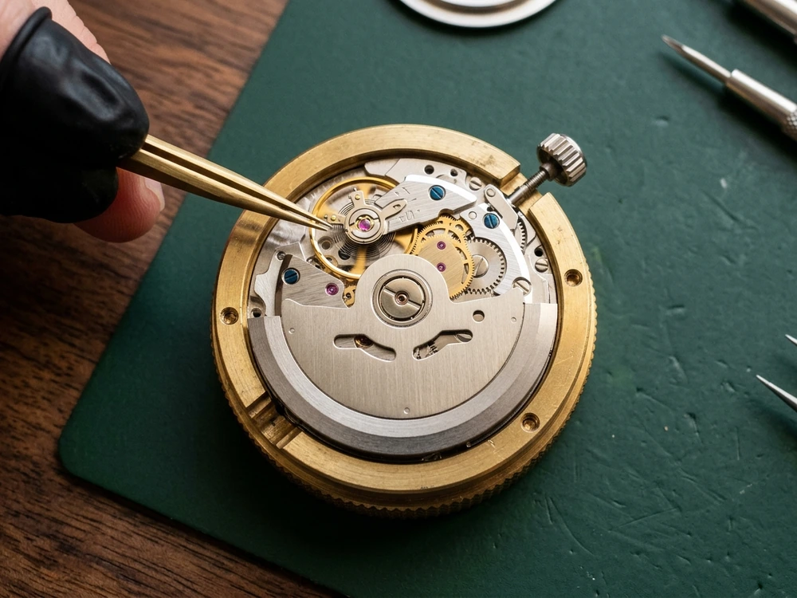
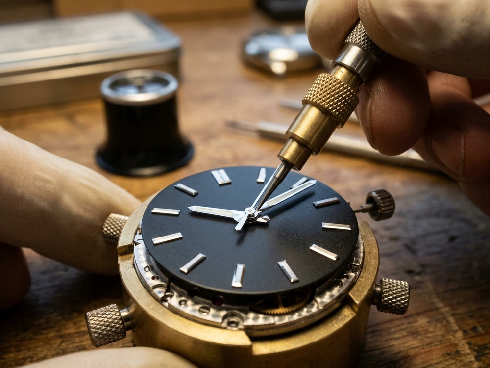
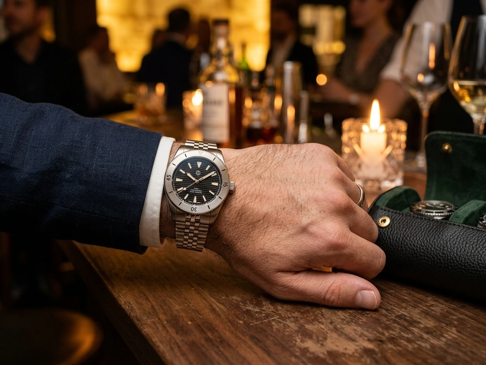

הלב המכני · SEIKO NH SERIES
24 אבני רובי שפועמות מתנועת היד.
קליבר אוטומטי יפני — מתאריכון קלאסי, דרך לב פתוח ועד שלד אדריכלי מלא ללא סוללה לעולם.
שעתיים וחצי על עמדות עבודה שבהן כל משתתף בוחר קייס צוללן, טייסים או דרס (בכסף, זהב או רוז-גולד), מתאים חוגה מתוך עשרות דגמים ומרכיב במו ידיו שעון מכני אוטומטי מפלדת 316L וזכוכית ספיר.
הלב המכני · SEIKO NH SERIES
קליבר אוטומטי יפני — מתאריכון קלאסי, דרך לב פתוח ועד שלד אדריכלי מלא ללא סוללה לעולם.
אומנות ההרכבה · 3–10 משתתפים
בוחרים קייס צוללן, טייסים או דרס, מתאימים חוגה מתוך עשרות דגמים ומרכיבים הכול מתחת ללוּפּ שענים אישי.
חיתום עלית · ASSEMBLED IN ISRAEL
כיפת Sapphire Crystal קמורה וציפוי זוהר לילה Super-LumiNova בשעון שבניתם במו ידיכם.
עבודת יד · חומרים ללא פשרות
אנחנו מגיעים עם מעבדת שענות ניידת שלמה — כלי שענים מדויקים, מלחצי פליז, לוּפּ אישי וחלקים מקוריים — ואתם בונים שעון מכני שנשאר על היד לשנים.

בוחנים מקרוב 24 אבני רובי וגלגל איזון חי — בדגמי תאריכון, לב פתוח (Open Heart) או שלד מלא.

קבוצת בוטיק של 3 עד 10 משתתפים בלבד להנחת הלוח והמחוגים בדיוק של עשיריות מילימטר בליווי שען צמוד.

אוטמים קייס 316L עם זכוכית ספיר (Sapphire Crystal) וגב שקוף, מתאימים רצועה ויוצאים עם שעון לכל החיים.
מתכונת אירוח פרטית · 3–10 משתתפים
אנו פורשים סביב שולחן הדירקטוריון שלכם עמדות עבודה, כלי שענים שווייצריים, קייסים מפלדת אל-חלד 316L וזכוכית ספיר (Sapphire Crystal) — וכל מנהל יוצא עם שעון מכני שבנה במו ידיו.
סדנת בוטיק אינטימית ל-3 עד 10 משתתפים בלבד בסלון או במרפסת עם יין משובח, ליווי אישי צמוד של שען לכל משתתף ויצירה מכנית שנשארת על היד עשורים.
תמחור שקוף · חוויה שנשארת על היד
לא עוד סדנה שמסתיימת בתמונה למזכרת. שעתיים וחצי של יצירה מדויקת, שבסופן כל משתתף יוצא עם שעון מכני אוטומטי שבנה במו ידיו – וישאר על היד עשורים.
חוויה אינטימית אצלכם בסלון או במרפסת • 4 עד 10 משתתפים
במסגרת הטבת ההשקה (במקום 1,800 ₪) • מותנה בהזמנה של 4 משתתפים לפחות.
מגיעים לחדר הישיבות שלכם • 3 עד 10 משתתפים בכל סשן
הצעה מותאמת להיקף הקבוצה, מיקום ותוספות מיתוג אישי.
תיאום ישיר מול ערן · STRATOS
סדנאות בוטיק אינטימיות ל-3 עד 10 משתתפים בלבד. שלחו הודעה ישירה לוואטסאפ (כולל השעון שעיצבתם באתר) ונחזור מיד עם זמינות והצעה מותאמת.
כלל לא. בזכות פורמט הבוטיק המצומצם (3 עד 10 משתתפים בלבד), שען מלווה כל משתתף באופן אישי צעד אחר צעד עד חיתום השעון על היד.
אתם מכינים רק שולחן וכיסאות. אנו מגיעים עם עמדות עבודה, כלים מקצועיים, קייסים מפלדת אל-חלד 316L, זכוכית ספיר (Sapphire Crystal) ומנגנוני Seiko NH מקוריים.
הסדנה נמשכת כשעתיים וחצי באווירה יוקרתית ונינוחה, ומיועדת ל-3 עד 10 משתתפים בלבד לשמירה על רמת דיוק וליווי אישי מוקפד.